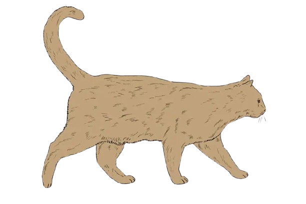

I'm a 20-year-old developer who enjoys working with low-level systems. I share some of my projects on GitHub, ranging from small C utilities to OSINT tools. Beyond programming, I like writing (not just code!) and have a strong interest in philosophy and biology, which influence how I think and create.
20 anni, una passione per i sistemi a basso livello e il piacere di scrivere (non solo codice). Esploro filosofia e biologia, cercando di portarne le logiche nei miei progetti.